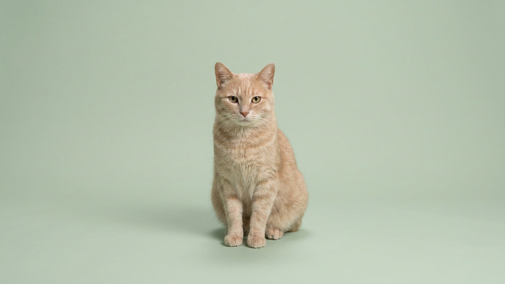

Красная точка скачет по стене, кошка носится по комнате и сшибает всё на пути — весело обоим. Но охота, которая никогда не заканчивается поимкой, оставляет кошку взвинченной: инстинкт требует «схватить», а хватать нечего. Разберём, почему лазер так заводит, в чём подвох и как играть им, чтобы он бодрил, а не копил раздражение.
🐾 У вашей кошки так же?
Расскажите в AnimaLife, как ведёт себя ваш питомец, — приложение объяснит причину и даст пошаговый план. Бесплатно, без записи к специалисту.
Разобрать свой случай → Разобрать в MAX →
У вас iPhone? AnimaLife есть в App Store
Мелкое, быстрое, непредсказуемое движение точки — идеальный триггер охотничьей программы. Кошка видит «жертву», которая мечется как насекомое или мышь, и мозг запускает всю цепочку: выследить, подкрасться, броситься. Отключить это усилием воли животное не может — оно реагирует рефлекторно.
Природная охота заканчивается поимкой — кошка хватает добычу, и напряжение сбрасывается. Лазер обрывает цепочку на самом взводе: ловить нечего, точку не удержать лапами. Азарт есть, разрядки нет.
Часть кошек после такой игры остаётся перевозбуждённой, а самые азартные начинают искать «ту самую точку» и без указки — гоняются за бликами часов, отражениями, лучом от телефона. Это не болезнь и не поломка психики, но привычка, которую лучше не закреплять.
Если кошка после лазера подолгу не успокаивается, ищет блики по всей квартире или становится тревожной — уберите указку и переключитесь на игрушки, которые ловятся: удочки, мячики, мышки, а на время вашего отсутствия — головоломки-кормушки. Кошке важно не просто набегаться, а завершить охоту победой.
🐾 Хотите понять, что кошка говорит вам?
Опишите ситуацию или пришлите видео в AnimaLife — AI разберёт поведение вашего питомца и подскажет, что делать. Бесплатно, ответ за минуту.
Разобрать поведение → Разобрать в MAX →
У вас iPhone? AnimaLife есть в App Store
🐾 Понравился разбор?
Подпишитесь на канал — каждый день разбираем по одному тревожному симптому у кошек и собак: что в пределах нормы, а когда пора к врачу. Подпишитесь, чтобы не пропустить разбор, который может спасти здоровье вашего питомца.